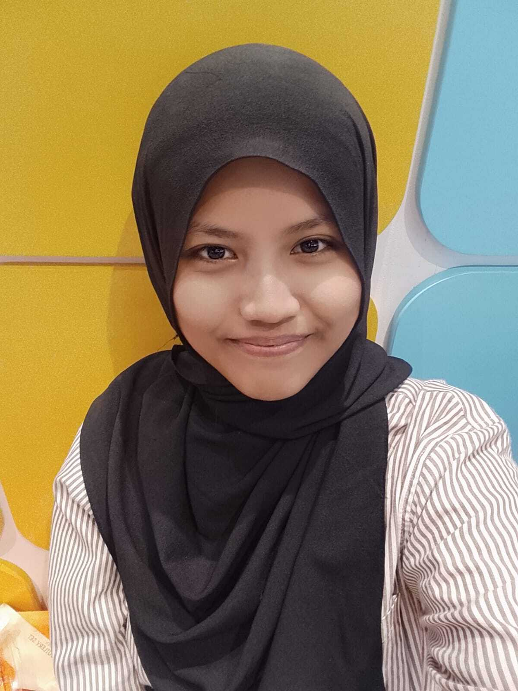

Business Enthusiast | Future Business Professional
Saya adalah mahasiswa semester 2 Program Studi Manajemen di Universitas Mitra Bangsa yang memiliki motivasi tinggi untuk terus belajar dan mengembangkan diri. Saya memiliki ketertarikan pada bidang manajemen, pemasaran, kewirausahaan, dan bisnis digital. Saya mampu bekerja dalam tim, memiliki komunikasi yang baik, disiplin, bertanggung jawab, serta mudah beradaptasi dengan lingkungan baru. Melalui proses perkuliahan dan pengalaman organisasi, saya terus mengembangkan kemampuan berpikir kritis, kepemimpinan, dan pemecahan masalah sebagai bekal untuk membangun karier profesional.
Berkarier di bidang manajemen dan bisnis pada perusahaan yang memberikan kesempatan untuk belajar, berkembang, dan meningkatkan kompetensi profesional. Saya ingin berkontribusi melalui kemampuan komunikasi, kerja sama tim, pemecahan masalah, serta semangat belajar untuk mendukung tujuan perusahaan.
Program Studi Manajemen
Semester 2
Jurusan Manajemen dan Bisnis
Anggota | 1 Tahun
English | Japanese | German
Melukis, Mendengarkan Musik, Belajar Bahasa, Memasak
Human Resource Management, Business Management, Financial Management
2026
2025
Jl. Asem 1 RT.008/RW.01, Kel. Cijantung, Kec. Pasar Rebo No.95 B
085718455864
putrisiskapratiwi251@gmail.com
Instagram : @ptrz_8698